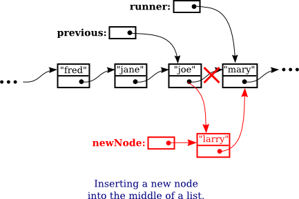

Linked Data Structures
Every useful object contains instance variables. When the type of an instance variable is given by a class or interface name, the variable can hold a reference to another object. Such a reference is also called a pointer, and we say that the variable points to the object. (Of course, any variable that can contain a reference to an object can also contain the special value null, which points to nowhere.) When one object contains an instance variable that points to another object, we think of the objects as being "linked" by the pointer. Data structures of great complexity can be constructed by linking objects together.
Recursive Linking
Something interesting happens when an object contains an instance variable that can refer to another object of the same type. In that case, the definition of the object's class is recursive. Such recursion arises naturally in many cases. For example, consider a class designed to represent employees at a company. Suppose that every employee except the boss has a supervisor, who is another employee of the company. Then the Employee class would naturally contain an instance variable of type Employee that points to the employee's supervisor:
/**
* An object of type Employee holds data about one employee.
*/
public class Employee {
String name; // Name of the employee.
Employee supervisor; // The employee's supervisor.
.
. // (Other instance variables and methods.)
.
} // end class EmployeeIf emp is a variable of type Employee, then emp.supervisor is another variable of type Employee. If emp refers to the boss, then the value of emp.supervisor should be null to indicate the fact that the boss has no supervisor. If we wanted to print out the name of the employee's supervisor, for example, we could use the following Java statement:
if ( emp.supervisor == null) {
System.out.println( emp.name + " is the boss and has no supervisor!" );
}
else {
System.out.print( "The supervisor of " + emp.name + " is " );
System.out.println( emp.supervisor.name );
}Now, suppose that we want to know how many levels of supervisors there are between a given employee and the boss. We just have to follow the chain of command through a series of supervisor links, and count how many steps it takes to get to the boss:
if ( emp.supervisor == null ) {
System.out.println( emp.name + " is the boss!" );
}
else {
Employee runner; // For "running" up the chain of command.
runner = emp.supervisor;
if ( runner.supervisor == null) {
System.out.println( emp.name + " reports directly to the boss." );
}
else {
int count = 0;
while ( runner.supervisor != null ) {
count++; // Count the supervisor on this level.
runner = runner.supervisor; // Move up to the next level.
}
System.out.println( "There are " + count
+ " supervisors between " + emp.name
+ " and the boss." );
}
}As the while loop is executed, runner points in turn to the original employee (emp), then to emp's supervisor, then to the supervisor of emp's supervisor, and so on. The count variable is incremented each time runner "visits" a new employee. The loop ends when runner.supervisor is null, which indicates that runner has reached the boss. At that point, count has counted the number of steps between emp and the boss.
In this example, the supervisor variable is quite natural and useful. In fact, data structures that are built by linking objects together are so useful that they are a major topic of study in computer science. We'll be looking at a few typical examples. In this section and the next, we'll be looking at linked lists. A linked list consists of a chain of objects of the same type, linked together by pointers from one object to the next. This is much like the chain of supervisors between emp and the boss in the above example. It's also possible to have more complex situations, in which one object can contain links to several other objects. We'll look at an example of this in Section 9.4.
Linked Lists
For most of the examples in the rest of this section, linked lists will be constructed out of objects belonging to the class Node which is defined as follows:
class Node {
String item;
Node next;
}The term node is often used to refer to one of the objects in a linked data structure. Objects of type Node can be chained together as shown in the top part of the above illustration. Each node holds a String and a pointer to the next node in the list (if any). The last node in such a list can always be identified by the fact that the instance variable next in the last node holds the value null instead of a pointer to another node. The purpose of the chain of nodes is to represent a list of strings. The first string in the list is stored in the first node, the second string is stored in the second node, and so on. The pointers and the node objects are used to build the structure, but the data that we want to represent is the list of strings. Of course, we could just as easily represent a list of integers or a list of Colors or a list of any other type of data by changing the type of the item that is stored in each node.
Although the Nodes in this example are very simple, we can use them to illustrate the common operations on linked lists. Typical operations include deleting nodes from the list, inserting new nodes into the list, and searching for a specified String among the items in the list. We will look at subroutines to perform all of these operations, among others.
For a linked list to be used in a program, that program needs a variable that refers to the first node in the list. It only needs a pointer to the first node since all the other nodes in the list can be accessed by starting at the first node and following links along the list from one node to the next. In my examples, I will always use a variable named head, of type Node, that points to the first node in the linked list. When the list is empty, the value of head is null.
Basic Linked List Processing
It is very common to want to process all the items in a linked list in some way. The common pattern is to start at the head of the list, then move from each node to the next by following the pointer in the node, stopping when the null that marks the end of the list is reached. If head is a variable of type Node that points to the first node in the list, then the general form of the code for processing all the items in a linked list is:
Node runner; // A pointer that will be used to traverse the list.
runner = head; // Start with runner pointing to the head of the list.
while ( runner != null ) { // Continue until null is encountered.
process( runner.item ); // Do something with the item in the current node.
runner = runner.next; // Move on to the next node in the list.
}Our only access to the list is through the variable head, so we start by getting a copy of the value in head with the assignment statement runner = head. We need a copy of head because we are going to change the value of runner. We can't change the value of head, or we would lose our only access to the list! The variable runner will point to each node of the list in turn. When runner points to one of the nodes in the list, runner.next is a pointer to the next node in the list, so the assignment statement runner = runner.next moves the pointer along the list from each node to the next. We know that we've reached the end of the list when runner becomes equal to null. Note that our list-processing code works even for an empty list, since for an empty list the value of head is null and the body of the while loop is not executed at all. As an example, we can print all the strings in a list of Strings by saying:
Node runner = head;
while ( runner != null ) {
System.out.println( runner.item );
runner = runner.next;
}The while loop can, by the way, be rewritten as a for loop. Remember that even though the loop control variable in a for loop is often numerical, that is not a requirement. Here is a for loop that is equivalent to the above while loop:
for ( Node runner = head; runner != null; runner = runner.next ) {
System.out.println( runner.item );
}Similarly, we can traverse a list of integers to add up all the numbers in the list. A linked list of integers can be constructed using the class
public class IntNode {
int item; // One of the integers in the list.
IntNode next; // Pointer to the next node in the list.
}If head is a variable of type IntNode that points to a linked list of integers, we can find the sum of the integers in the list using:
int sum = 0;
IntNode runner = head;
while ( runner != null ) {
sum = sum + runner.item; // Add current item to the sum.
runner = runner.next;
}
System.out.println("The sum of the list of items is " + sum);It is also possible to use recursion to process a linked list. Recursion is rarely the natural way to process a list, since it's so easy to use a loop to traverse the list. However, understanding how to apply recursion to lists can help with understanding the recursive processing of more complex data structures. A non-empty linked list can be thought of as consisting of two parts: the head of the list, which is just the first node in the list, and the tail of the list, which consists of the remainder of the list after the head. Note that the tail is itself a linked list and that it is shorter than the original list (by one node). This is a natural setup for recursion, where the problem of processing a list can be divided into processing the head and recursively processing the tail. The base case occurs in the case of an empty list (or sometimes in the case of a list of length one). For example, here is a recursive algorithm for adding up the numbers in a linked list of integers:
if the list is empty then
return 0 (since there are no numbers to be added up)
otherwise
let listsum = the number in the head node
let tailsum be the sum of the numbers in the tail list (recursively)
add tailsum to listsum
return listsumOne remaining question is, how do we get the tail of a non-empty linked list? If head is a variable that points to the head node of the list, then head.next is a variable that points to the second node of the list—and that node is in fact the first node of the tail. So, we can view head.next as a pointer to the tail of the list. One special case is when the original list consists of a single node. In that case, the tail of the list is empty, and head.next is null. Since an empty list is represented by a null pointer, head.next represents the tail of the list even in this special case. This allows us to write a recursive list-summing function in Java as
/**
* Compute the sum of all the integers in a linked list of integers.
* @param head a pointer to the first node in the linked list
*/
public static int addItemsInList( IntNode head ) {
if ( head == null ) {
// Base case: The list is empty, so the sum is zero.
return 0;
}
else {
// Recursive case: The list is non-empty. Find the sum of
// the tail list, and add that to the item in the head node.
// (Note that this case could be written simply as
// return head.item + addItemsInList( head.next );)
int listsum = head.item;
int tailsum = addItemsInList( head.next );
listsum = listsum + tailsum;
return listsum;
}
}I will finish by presenting a list-processing problem that is easy to solve with recursion, but quite tricky to solve without it. The problem is to print out all the strings in a linked list of strings in the reverse of the order in which they occur in the list. Note that when we do this, the item in the head of a list is printed out after all the items in the tail of the list. This leads to the following recursive routine. You should convince yourself that it works, and you should think about trying to do the same thing without using recursion:
public static void printReversed( Node head ) {
if ( head == null ) {
// Base case: The list is empty, and there is nothing to print.
return;
}
else {
// Recursive case: The list is non-empty.
printReversed( head.next ); // Print strings from tail, in reverse order.
System.out.println( head.item ); // Then print string from head node.
}
}In the rest of this section, we'll look at a few more advanced operations on a linked list of strings. The subroutines that we consider are instance methods in a class that I wrote named StringList. An object of type StringList represents a linked list of strings. The class has a private instance variable named head of type Node that points to the first node in the list, or is null if the list is empty. Instance methods in class StringList access head as a global variable. The source code for StringList is in the file StringList.java, and it is used in a sample program named ListDemo.java, so you can take a look at the code in context if you want.
One of the methods in the StringList class searches the list, looking for a specified string. If the string that we are looking for is searchItem, then we have to compare searchItem to each item in the list. This is an example of basic list traversal and processing. However, in this case, we can stop processing if we find the item that we are looking for.
/**
* Searches the list for a specified item.
* @param searchItem the item that is to be searched for
* @return true if searchItem is one of the items in the list or false if
* searchItem does not occur in the list.
*/
public boolean find(String searchItem) {
Node runner; // A pointer for traversing the list.
runner = head; // Start by looking at the head of the list.
// (head is an instance variable! )
while ( runner != null ) {
// Go through the list looking at the string in each
// node. If the string is the one we are looking for,
// return true, since the string has been found in the list.
if ( runner.item.equals(searchItem) )
return true;
runner = runner.next; // Move on to the next node.
}
// At this point, we have looked at all the items in the list
// without finding searchItem. Return false to indicate that
// the item does not exist in the list.
return false;
} // end find()It is possible that the list is empty, that is, that the value of head is null. We should be careful that this case is handled properly. In the above code, if head is null, then the body of the while loop is never executed at all, so no nodes are processed and the return value is false. This is exactly what we want when the list is empty, since the searchItem can't occur in an empty list.
Inserting into a Linked List
The problem of inserting a new item into a linked list is more difficult, at least in the case where the item is inserted into the middle of the list. (In fact, it's probably the most difficult operation on linked data structures that you'll encounter in this chapter.) In the StringList class, the items in the nodes of the linked list are kept in increasing order. When a new item is inserted into the list, it must be inserted at the correct position according to this ordering. This means that, usually, we will have to insert the new item somewhere in the middle of the list, between two existing nodes. To do this, it's convenient to have two variables of type Node, which refer to the existing nodes that will lie on either side of the new node. In the following illustration, these variables are previous and runner. Another variable, newNode, refers to the new node. In order to do the insertion, the link from previous to runner must be "broken," and new links from previous to newNode and from newNode to runner must be added:

Once we have previous and runner pointing to the right nodes, the command "previous.next = newNode;" can be used to make previous.next point to the new node. And the command "newNode.next = runner" will set newNode.next to point to the correct place. However, before we can use these commands, we need to set up runner and previous as shown in the illustration. The idea is to start at the first node of the list, and then move along the list past all the items that are less than the new item. While doing this, we have to be aware of the danger of "falling off the end of the list." That is, we can't continue if runner reaches the end of the list and becomes null. If insertItem is the item that is to be inserted, and if we assume that it does, in fact, belong somewhere in the middle of the list, then the following code would correctly position previous and runner:
Node runner, previous;
previous = head; // Start at the beginning of the list.
runner = head.next;
while ( runner != null && runner.item.compareTo(insertItem) < 0 ) {
previous = runner; // "previous = previous.next" would also work
runner = runner.next;
}(This uses the compareTo() instance method from the String class to test whether the item in the node is less than the item that is being inserted. See Subsection 2.3.3.)
This is fine, except that the assumption that the new node is inserted into the middle of the list is not always valid. It might be that insertItem is less than the first item of the list. In that case, the new node must be inserted at the head of the list. This can be done with the instructions
newNode.next = head; // Make newNode.next point to the old head.
head = newNode; // Make newNode the new head of the list.It is also possible that the list is empty. In that case, newNode will become the first and only node in the list. This can be accomplished simply by setting head = newNode. The following insert() method from the StringList class covers all of these possibilities:
/**
* Insert a specified item into the list, keeping the list in order.
* @param insertItem the item that is to be inserted.
*/
public void insert(String insertItem) {
Node newNode; // A Node to contain the new item.
newNode = new Node();
newNode.item = insertItem; // (N.B. newNode.next is null.)
if ( head == null ) {
// The new item is the first (and only) one in the list.
// Set head to point to it.
head = newNode;
}
else if ( head.item.compareTo(insertItem) >= 0 ) {
// The new item is less than the first item in the list,
// so it has to be inserted at the head of the list.
newNode.next = head;
head = newNode;
}
else {
// The new item belongs somewhere after the first item
// in the list. Search for its proper position and insert it.
Node runner; // A node for traversing the list.
Node previous; // Always points to the node preceding runner.
runner = head.next; // Start by looking at the SECOND position.
previous = head;
while ( runner != null && runner.item.compareTo(insertItem) < 0 ) {
// Move previous and runner along the list until runner
// falls off the end or hits a list element that is
// greater than or equal to insertItem. When this
// loop ends, previous indicates the position where
// insertItem must be inserted.
previous = runner;
runner = runner.next;
}
newNode.next = runner; // Insert newNode after previous.
previous.next = newNode;
}
} // end insert()If you were paying close attention to the above discussion, you might have noticed that there is one special case which is not mentioned. What happens if the new node has to be inserted at the end of the list? This will happen if all the items in the list are less than the new item. In fact, this case is already handled correctly by the subroutine, in the last part of the if statement. If insertItem is greater than all the items in the list, then the while loop will end when runner has traversed the entire list and become null. However, when that happens, previous will be left pointing to the last node in the list. Setting previous.next = newNode adds newNode onto the end of the list. Since runner is null, the command newNode.next = runner sets newNode.next to null, which is exactly what is needed to mark the end of the list.
Deleting from a Linked List
The delete operation is similar to insert, although a little simpler. There are still special cases to consider. When the first node in the list is to be deleted, then the value of head has to be changed to point to what was previously the second node in the list. Since head.next refers to the second node in the list, this can be done by setting head = head.next. (Once again, you should check that this works when head.next is null, that is, when there is no second node in the list. In that case, the list becomes empty.)
If the node that is being deleted is in the middle of the list, then we can set up previous and runner with runner pointing to the node that is to be deleted and with previous pointing to the node that precedes that node in the list. Once that is done, the command "previous.next = runner.next;" will delete the node. The deleted node will be garbage collected. I encourage you to draw a picture for yourself to illustrate this operation. Here is the complete code for the delete() method:
/**
* Delete a specified item from the list, if that item is present.
* If multiple copies of the item are present in the list, only
* the one that comes first in the list is deleted.
* @param deleteItem the item to be deleted
* @return true if the item was found and deleted, or false if the item
* was not in the list.
*/
public boolean delete(String deleteItem) {
if ( head == null ) {
// The list is empty, so it certainly doesn't contain deleteString.
return false;
}
else if ( head.item.equals(deleteItem) ) {
// The string is the first item of the list. Remove it.
head = head.next;
return true;
}
else {
// The string, if it occurs at all, is somewhere beyond the
// first element of the list. Search the list.
Node runner; // A node for traversing the list.
Node previous; // Always points to the node preceding runner.
runner = head.next; // Start by looking at the SECOND list node.
previous = head;
while ( runner != null && runner.item.compareTo(deleteItem) < 0 ) {
// Move previous and runner along the list until runner
// falls off the end or hits a list element that is
// greater than or equal to deleteItem. When this
// loop ends, runner indicates the position where
// deleteItem must be, if it is in the list.
previous = runner;
runner = runner.next;
}
if ( runner != null && runner.item.equals(deleteItem) ) {
// Runner points to the node that is to be deleted.
// Remove it by changing the pointer in the previous node.
previous.next = runner.next;
return true;
}
else {
// The item does not exist in the list.
return false;
}
}
} // end delete()